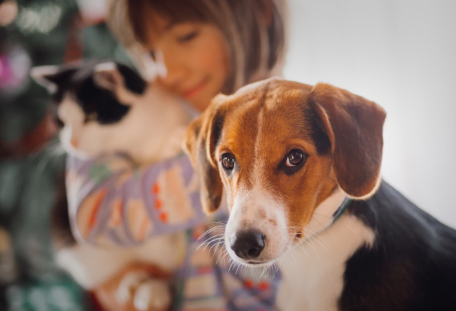

貓狗大戰一觸即發，同居準則大公開！｜專業獸醫—李道絨
文章轉載：PetTalk 說寵物
本文由PetTalk撰寫，全國動物醫院事業群-李道絨獸醫師審稿
很多喜歡動物的飼主家中會同時飼養汪星人及貓星人，有時候還會認為讓家中的毛寶貝多一個伴可以排解寂寞、增加新朋友，但有時候我們都會忽略，對於新夥伴的加入，除了資源重新分配外還有許多特別要注意的事項，避免家中經常發生貓狗大戰！
貓狗不合相信大家都很常常聽說吧！在好幾千年前，貓狗因為追求同樣的獵物，所以就成為宿敵，加上兩者天生的個性就截然不同，相處上就更加的不合。
那為什麼有些人的家中貓狗相處卻非常的融洽？讓我們一起來找尋讓牠們和睦相處的小方法吧！
已經養狗，準備養貓者：挑選幼貓容易融入家庭
第一步，確認家中的狗狗是否在過去有咬傷貓咪或主動攻擊其他動物的經驗，如果是體型相差過大更要注意這樣的情況，而每隻狗狗的學習經驗不同，對貓咪也有不同的認知，也經常會因為好奇心造成互動不良，而讓貓咪感到恐懼害怕。
而飼主更可以透過平常帶狗狗去散步觀察狗狗對貓咪的反應，如果狗狗的穩定性高，可以選擇飼養幼貓，因為幼貓的好奇心和學習能力都很強，所以可以很快找到與狗和平相處的方式，反之如果選擇的是未社會化的成貓，可能會造成成貓的壓力過大、緊張、害怕。
已經養貓，準備養狗的飼主，保持貓狗間的互動距離，各自保留動線
貓咪是非常容易緊張的動物，應該確保貓咪平常的生活動線，避免狗狗的範圍讓貓受到影響，在牠們還不熟悉彼此的狀態時，需要保持適當的距離，讓貓咪多點時間觀察新成員的加入，等到貓咪降低了戒心，也會漸漸縮短彼此的距離。
貓狗同居注意事項
保持適當是當距離
絕對不要為了讓牠們增進而硬塞在同一個空間，貓咪和狗狗天性個性就不同，需要給予不同的生活空間，才能夠讓他們感到舒適和自在。
分開餵食地點、貓狗飼料大不同
貓咪和狗狗雖然都是肉食動物，但所需的營養成份大不同，絕對不能共吃，飼料除了不能共吃外，餵食的地點也一定要分開，如果餵食時靠太近，有時候還會發生互搶食物打架的事情發生！
不可偏心
毛孩們也是有感覺的！如果對任一方過於偏心、偏袒，經常會造成被冷落的一方的忌妒心，故意的惡作劇或攻擊，就像有些飼主家中有新生兒出生，家中毛孩會變得孤僻又愛惡作劇的吸引主人的目光，這些都是在告訴主人們，牠生氣、心靈受傷了，尤其是更要親自原本家中本來的毛孩，讓牠明白自己的無法被取代的！
盡量減少家中無人
在雙方還沒熟悉彼此的狀態下，很容易產生攻擊行為，必須要避免把牠們留在家中，慢慢觀察牠們間的相處。
其他注意事項
因為貓狗的習性大不同，也要特別留意有些狗狗會趁不注意時，食入食物貓咪的便便或是定期把貓咪沒吃完的飼料吃掉，這些都是飼主需要特別注意的！
貓狗能夠和平相處並不是完全做不到的事，只要飼主能夠更多點心思照顧做好足夠的準備，就能夠一起迎接新成員的到來！不論貓咪還是狗狗，如果因為家中新成員的增加而出現精神食慾不佳或是排尿排便的頻率或習慣改變，都一定要立即帶給獸醫師診治喔！